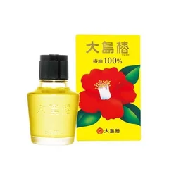

まず1つ（パサついて広がる人）

大島椿
椿油100% 60mL
60mL・無香料・無着色・天然椿油100%（Amazon限定・おまけ付）
¥1782税込・出典掲載価格
選び方と声
- 選ぶ条件：白い毛が増えて、乾くとパサついて広がる人。香りの強いヘアオイルが合わなくなった人
- 肩につかない長さなら1〜2滴。手のひらと指の間まで広げてから、毛先と表面だけに。根元に付けると分け目が目立ちます
- 使うのは夜、洗ったあと乾かす前がおすすめ。朝は広がったところに手に残ったくらいの量を
気になる声気になる点：付けすぎると束になって清潔感がなく見えます。頭皮が荒れている最中は何も付けず、赤みやかゆみが続くなら皮膚科へ
販売価格・容量・送料はリンク先でご確認ください